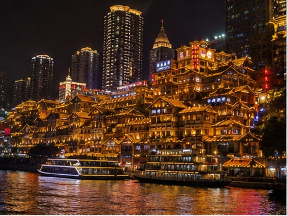
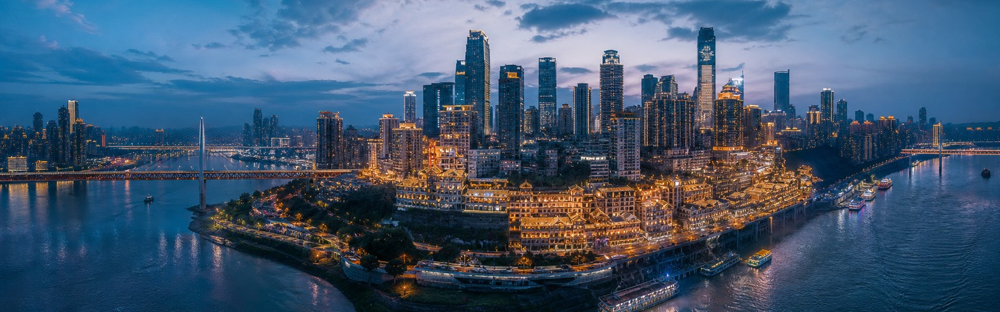
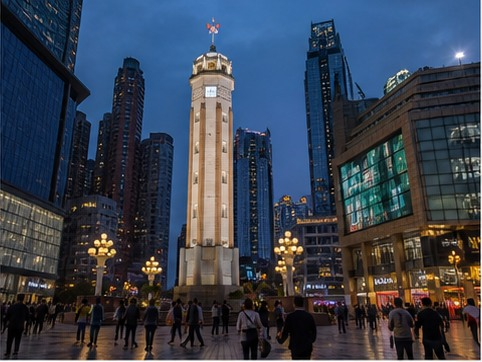
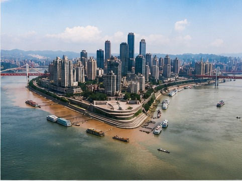
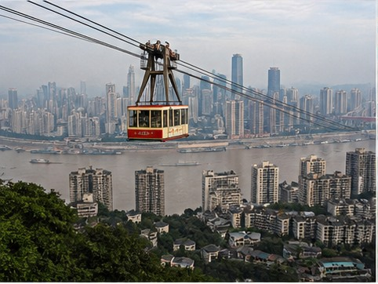
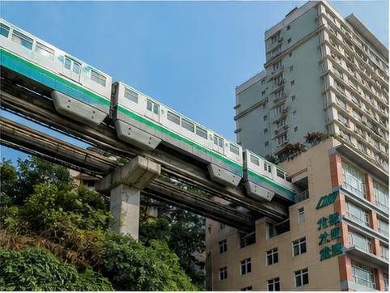
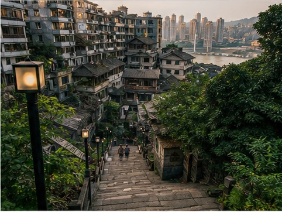
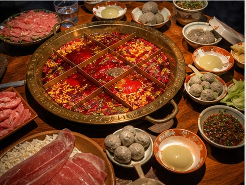

01
Hongya Cave
Layered riverside architecture that becomes dramatic after dark.

China's city in layers
Built across steep hills where the Yangtze and Jialing rivers meet, Chongqing is a city of stacked roads, rooftop entrances, bridges, cableways, and trains that pass through buildings. Its geography makes an ordinary walk feel cinematic and turns the skyline into part of daily life.
The city’s night views have made it a global social-media phenomenon, but Chongqing is equally memorable at street level: old stairways, neighborhood markets, river fog, and the intense aroma of butter hotpot. Good route planning matters here because a short distance on a map may hide a major change in elevation.
01
Start here

Layered riverside architecture that becomes dramatic after dark.

A central landmark surrounded by dense modern city life.

See Chongqing’s two great rivers meet below the skyline.

Cross the river above one of China’s most vertical cities.

Watch the monorail pass directly through a residential building.

Stone steps and old neighborhoods reveal the city’s real scale.
02
Eat like a local

03
Recommended time
Three days reveal the city core; four or five allow a major cultural or landscape day trip.
Get ItineraryConnect Liziba, the cableway, Jiefangbei, old stairways, and Hongya Cave with realistic elevation changes.
Add Ciqikou, museums, slower food stops, and a better-paced evening skyline route.
Use a private car for Wulong Karst or the Dazu Rock Carvings without compressing the city.
Your Chongqing, made clearer
Tell us your hotel area, mobility needs, and must-see views. We’ll turn Chongqing’s layers into a route that actually works.
Start With Your Chongqing Trip